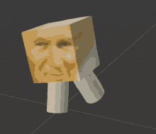

<html>
<head>
<script type="text/javascript">
function okno_zamknij_sender()
{
window.close()
}
</script>
</head>
<body>
-Język JavaScript został opracowany w 1995 roku <br>
-Java Script jest jezykiem skryptowym ponieważ kod zostaje w formie tekstu<br>
-Klient<br>
-Przeglądarka izoluje JavaScript, gdy jest wykonywany w ramach samego procesu przeglądarki. Nie może zrobić niczego, co nie jest dozwolone przez interpreter JavaScript przeglądarki lub kompilator JIT<br>
-Java Script jest zorientowany obiektowo ponieważ w ogóle nie posiada klas<br>
<br>
<br>
<b><font color="blue">‹input type="button" name="przycisk" value="Nowa Strona" onclick="WinOpen(' ')"›</font></b><br>
<b>Wytłumaczenie</b>
<br>
<u>
<font color="blue">type="button" - określa przycisk<br>
name="przycisk" - okrśla nazwe (id) przycisku<br>
value="Nowa Strona" - określa tekst na przycisku<br>
onclick - po kliknięciu przycisku wykona się skrypt</font>
</u>
<br>
<br>
<br>
<b><font color="red">‹window.open("obraz.html","okienko","toolbar=no,directories=no,menubar=no,height=280,width=160,top=200,left=200");›</font></b><br>
<b>Wytłumaczenie</b>
<br>
<u>
<font color="red">
toolbar=no - ukrywa przyciski katalogu<br>
directories=no - widoczność katalogu<br>
menubar=no - widoczność paska manu<br>
height=280 - wysokość<br>
width=160 - szreokość<br>
top=200 - odległość od góry<br>
left=200 - odległość od lewej<br>
</font>
</u>
<br>
<br>
<br>
<b><font color="green">window.close()</font></b><br>
<b>Wytłumaczenie</b>
<br>
<u>
<font color="green">
window.close() - zamyka okno<br>
</font>
</u>

<br>
<br>
<input type="button" value="zamknij okno" onclick="okno_zamknij_sender()"/>
</body>
</html>